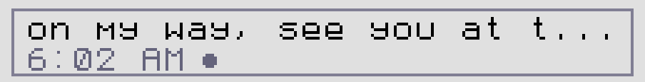
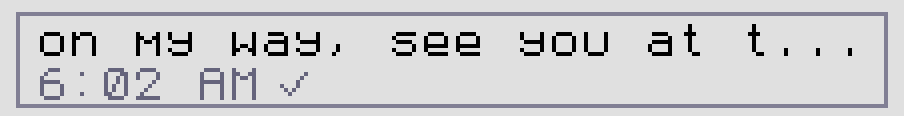
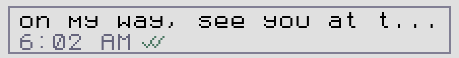

Chat: messages and doodles
Chat sends end-to-end encrypted messages and hand-drawn doodles to other CATs over LoRa radio, and to anyone on the Reticulum network when your CAT is online.
How Chat works#
- Messages use LXMF, the messaging format of the Reticulum network. You can talk to other CATs, and to people using LXMF apps such as Sideband and NomadNet.
- Every CAT has an address: 32 hexadecimal digits, such as
7f6f59534ee42c0a3513cb272f75633a. People message you by address; your device name travels with it so they see who you are. - Messages reach a nearby CAT directly over LoRa. Farther away, other CATs relay them, or a propagation node holds them until your friend comes online. With Wi-Fi, your CAT also connects to the internet-wide Reticulum network.
- Conversations are one-to-one. There are no group chats yet.
The peer list#
Open the Chat tile (the radio) on the home screen. The top bar shows CHAT, the total unread count, your own name and the first 8 digits of your address, and the time. Comparing those 8 digits with a friend's screen is a quick way to check you have the right address.
Three tabs sit under the bar. Switch with ◀ ▶ or tap a tab.
Each row shows the name, the first 8 digits of the address, and either the number of messages or saved / unsaved. On the right, a black box counts unread messages. A small green dot means that CAT was heard announcing itself directly over LoRa since your CAT started. It doesn't promise the CAT is in range right now.
| Control | Action |
|---|---|
| ▲ ▼, or swipe up and down | Move through the list (six rows per page) |
| A or tap a row | Open the conversation. On the Nearby tab: save the CAT as a contact. |
| START | The Manage popup (below) |
| SELECT | Announce yourself now (see announcing) |
| B | Back to the home screen |
Managing contacts and chats#
Press START on the peer list. The popup CONTACTS & CHATS acts on the highlighted row and only lists actions that apply to it.
| Option | What it does |
|---|---|
| Cancel | Close the popup (or press B, or tap outside). |
| Delete conversation | Permanently delete this conversation's messages. Saved contacts are kept. |
| Clear all chats | Delete every conversation and forget unsaved peers. Your identity and routing stay. New announces can add peers again. |
| Add LXMF address | Type someone's 32-digit address, then an optional friendly name. |
| Show my address (QR) | Your address and QR code. |
| Save contact / Edit friendly name | Save this peer, or rename a saved one. Your name for them replaces the name they announce. |
| Remove contact (keep chat) | Unsave the contact. The conversation moves back to Requests. |
Adding a contact#
- From Nearby: ask your friend to announce (or just wait; CATs announce regularly). Their CAT appears on the Nearby tab. Highlight it and press A, type a name, and save.
- By address: START → Add LXMF address. Type the 32 digits on the keyboard's number page (upper or lower case; surrounding < > are fine) and press NEXT. Then type a friendly name, or leave it empty, and press SAVE.
- From Requests: highlight the conversation, START → Save contact.
You can keep up to 64 contacts. Friendly names can be up to 47 characters.
A conversation#
Messages from the other person are grey bubbles on the left; yours are outlined on the right. Each bubble shows the start of the message, the time (or the date if it wasn't today) and, on yours, the delivery mark. A red line marks where unread messages begin. Six messages fit on a page.
| Control | Action |
|---|---|
| A or tap Write a message | Open the keyboard to write. If you already have a draft, send it. |
| ▲ ▼, or swipe | Highlight a message; page through older and newer history |
| ▶ or tap a highlighted message | Open it in the reader (or view a doodle). With a draft: edit the draft. |
| ◀ or tap the pen | Draw a doodle |
| START | Mark the conversation as read (only once you have scrolled down to the newest message) |
| SELECT | Announce yourself |
| B | Close the reader; otherwise clear the draft; otherwise leave the conversation. A message that is still sending keeps going in the background. |
The bottom-right corner tells you what START would do or where unread messages are: Mark read, ▲ 3 unread or ▼ newest.
Writing and sending#
The keyboard opens with your contact's name in the title. Type, then press SEND (or START). A message can be up to 159 characters. CAT corrects obvious typos as you go; see Typing.
Delivery marks#
Your bubbles show how far each message has got:
| Mark | Meaning | On screen |
|---|---|---|
| Hollow circle | Queued on your CAT. | – |
| Small dot | Sending. |  |
| One grey tick | Sent. Waiting for proof that it arrived. |  |
| Two green ticks | Delivered: your friend's CAT confirmed it. |  |
| One tick and a dot | Relayed: a propagation node accepted it and will hand it over when your friend checks in. This is final; a second tick won't follow, and that is normal. | – |
| Red plus | Failed. |
If CAT has never heard from the recipient, it asks the network where they are and holds your message for up to 3 minutes while it waits; the composer keeps saying Sending. If a friend is more than one radio hop away, CAT tries directly once, then hands the message to a propagation node, retrying after 1, 2 and 4 minutes before giving up.
Short notices at the bottom of the screen explain refusals: Messaging busy - try again (one send at a time), Offline - cannot send yet, or Doodle sending - wait. A refused draft is kept so you can try again.
Reading long messages#
Highlight a message and press ▶ (or tap it again) to open the reader. The header says who it is from or to, the time, its position in the conversation and its delivery mark. ▲ ▼ scroll. Long messages are fetched in full when you open them; you may briefly see [loading the rest...].
Doodles#
Doodles are small one-colour drawings, PictoChat style. Open the editor from a conversation with ◀ or by tapping the pen.
| Tool | Touch | Button |
|---|---|---|
| Draw / erase | Draw on the canvas; tap PEN or ERASE | START switches tool |
| Thin or thick nib | Tap the left or right half of the nib box | ▶ |
| Colour (12) | Tap a swatch | ▲ ▼ |
| Undo | UNDO | SELECT |
| Clear | CLEAR, then again within 2.5 s when it says SURE? | – |
| Send | SEND | A |
| Back (draft is kept) | – | B |
The ink meter in the top corner shows how much drawing is left (a doodle is at most 16 parts). Each part is one LoRa packet, sent and confirmed in turn. A progress box shows each part: green when delivered, red if it failed. Press B to let it finish in the background. If parts fail, you are offered A Retry B Keep; retry only resends the missing parts.
Open a doodle bubble with ▶ or a second tap.
The sender's CAT resends missing parts automatically while they have your conversation open. Doodles only display on CATs: other LXMF apps show them as a short line of random-looking text.
Announcing yourself#
An announce tells the network your address, your name and how to reach you. CAT announces three times in the first few minutes after starting, then every 15 minutes, and whenever its connections come up. Press SELECT in Chat to announce right away; you can do it again after 30 seconds. Opening the Nearby tab also announces.
Sharing your address#
Settings → MY ADDRESS, or START → Show my address (QR) in Chat, shows your address as text and as a QR code. A friend with a phone LXMF app can scan the code; another CAT has no camera, so its owner types the digits in with Add LXMF address. Press B or tap to close.
Notifications#
- A new message wakes the screen if it was dim or dark.
- With NEW MESSAGE TONE on, a soft three-note chime plays (at most once every 2 seconds).
- Unread counts show on the Chat tile, in the Chat title bar and on each row.
- There are no pop-ups and no LED signals for messages.
Limits and what's not there yet#
- One-to-one only: no group chats or channels yet.
- No photos or files; doodles are the only pictures.
- You can't delete a single message, only a whole conversation.
- No reply, forward, search or typing indicators.
- CAT can't scan QR codes.